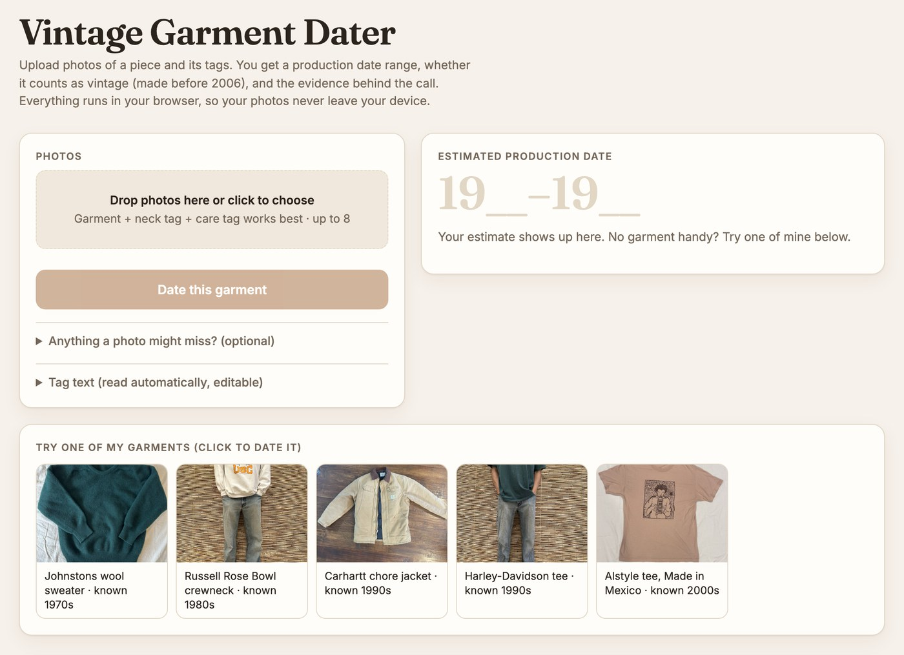
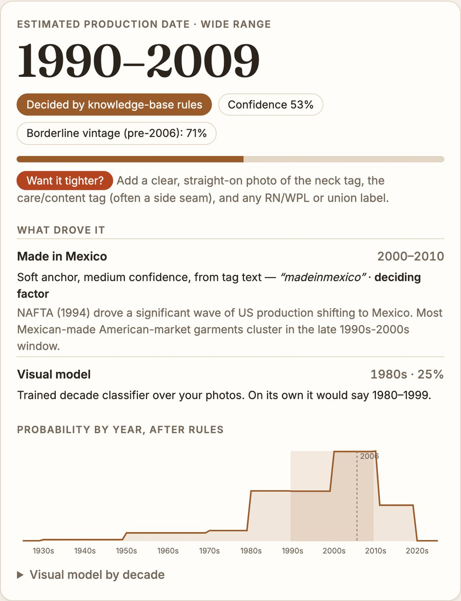
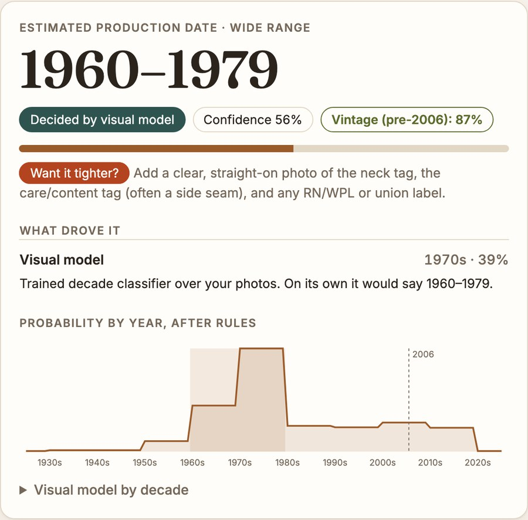

Vintage Garment Dater estimates when a piece of clothing was made from photos of the garment and its tags. Upload a few pictures and it gives you a date range, tells you whether the piece counts as vintage (made before 2006), and lists the evidence behind the call.
Why I Built It
When I ran JPNLAvintage, dating garments by eye was one of the most important parts of the job. I'd read the tag style, care label, union label, RN number, and country of origin to pin down an era, and getting it right was the difference between accurate pricing and guessing. This project turns that expertise into a tool, so it's built on what I actually know about clothing, not just a generic image classifier.
How It Works
Each photo goes through a frozen open-source image encoder (CLIP ViT-B/32), and a decade classifier I trained on my own dataset of dated eBay listings scores it. At the same time, on-device OCR reads the tag text, like the country of origin, RN or WPL numbers, union names, fiber content, care instructions, and zipper brands.
Each signal it finds maps to a rule in a knowledge base I built from regulatory and industry history, like the 1971 FTC care-label rule, the 1960 Textile Fiber Act, RN registration ranges, union merger dates, and countries that no longer exist. Hard rules rule out impossible years, softer ones shift the odds, and when rules conflict, the low-confidence ones get dropped first.
The result shows a date range, a confidence score, a vintage verdict, the top signals behind the estimate, and whether the model or the rules made the call. There's no third-party AI or vision API involved, since everything runs on my own trained weights and rules. Here are two of my own garments: on the Alstyle tee, the rules made the call from its "Made in Mexico" tag, and on the Johnstons sweater, the visual model did.


What I Built
I built an eBay data pipeline that scraped more than 18,000 listings and about 147,000 photos, pulling labels automatically from the listing titles. I also wrote the knowledge base of dating rules, covering care labels, union labels, brand tag histories, and RN lookups, then trained the model with separate train, validation, and test listings and compared logistic regression and MLP heads. The rules engine combines the model's guesses with those rules, and the whole thing runs in your browser, so your photos never leave your device.
Results
On held-out test listings, the visual model on its own (covering the 1940s to 2010s) got:
| Metric | Result |
|---|---|
| Exact decade correct | 67% (vs. 35% for always guessing the most common decade) |
| Within one decade | 87% |
| Test set | 2,245 listings |
The training labels come from listing titles, which sellers write themselves and which are often a little off, so these numbers are conservative. When a tag is readable, the rules engine adds precision on top.
Limitations
It's built for American-market garments and covers the 1940s to 2010s, so pre-1940 pieces lean mostly on the rules. It's also an estimate, not an appraisal or authentication.
Through This Project I've Learned and Practiced